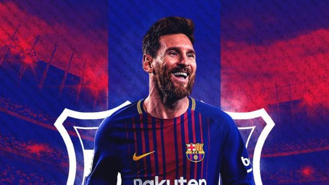

Messi

Lionel Messi was born, 24 June 1987, in Rosario, Argentina to a working-class family. His father was a factory steel worker, and his mother a cleaner.
He began playing from an early age, and his talent was soon apparent. However, at the age of 11, Messi was diagnosed with growth hormone deficiency (GHD).
His local club, River Plate were interested in signing Messi but did not want to pay for his medical treatment. However, Messi was given a trial with Barcelona, and coach Carles Rexach was impressed offering Messi a contract which included paying for his treatment in Spain.
Messi progressed through the ranks and was given his first appearance in the 2004/05 season becoming the youngest player to score a league goal.
In the 2009-10 season, Messi scored 47 goals in all competitions, equalling Ronaldo's record total for Barcelona
In the calendar year of 2012, he broke the all-time world record for most goals scored in a calendar year
After a disappointing first game, when Argentina unexpectedly lost to Saudi Arabia, Lionel Messi was key to firing Argentina to a 2-0 victory over Mexico, with Messi scoring an excellent goal.
With all these accomplishments it's clear why messi is regarded as the greatest footballer of all time.